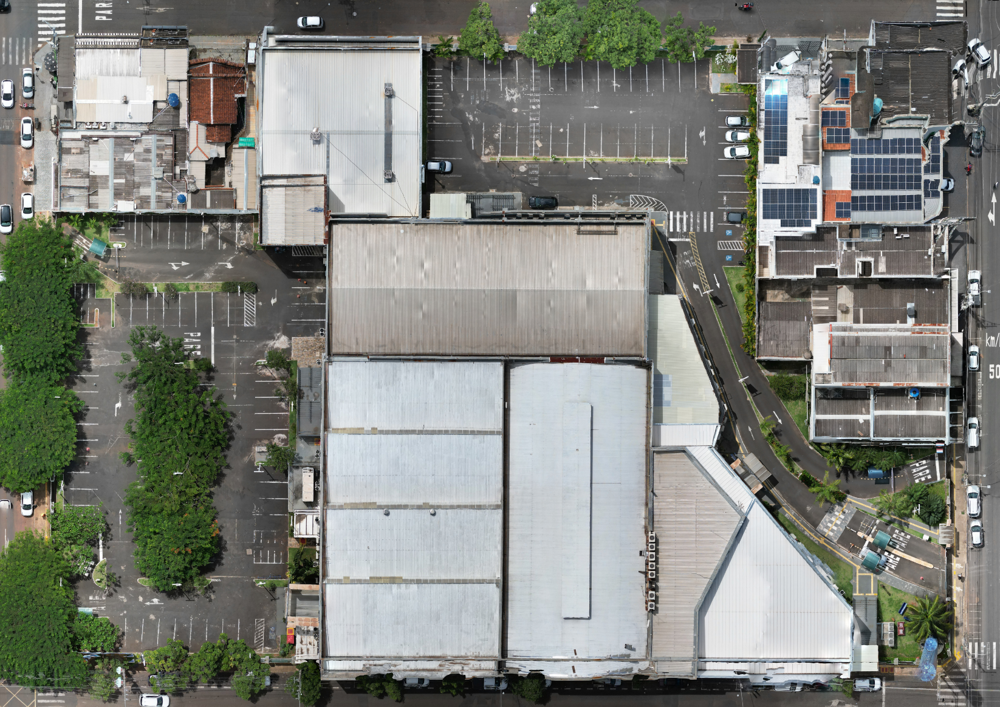

Uma leitura estável das vagas.
A análise das imagens identifica veículos e relaciona sua posição às vagas. Um filtro temporal evita que detecções passageiras alternem o estado entre livre e ocupado.
Mobilidade no campus · Uniube
Da ocupação das vagas ao caminho até elas. Visão computacional e um gêmeo digital do campus ajudam a entender o estacionamento antes de percorrê-lo.
Pesquisa aplicada na Universidade de Uberaba
Um protótipo de pesquisa.
Um estacionamento real como referência.
01 / A pesquisa
Saber onde há espaço não basta. É preciso reconhecer o lugar, considerar quem vai utilizá-lo e indicar como chegar. O Estaciona AI reúne essas etapas em uma representação tridimensional do estacionamento.
A pesquisa integra detecção de veículos por imagem, previsão de demanda e recomendação de vagas. A acessibilidade tem prioridade; o histórico de uso e a distância completam a escolha.

UNIUBE · REGISTRO AÉREO DO CAMPUSDo lugar ao modelo
Cerca de mil fotografias aéreas deram origem ao gêmeo digital. Edifícios, vias e fileiras de vagas preservam as referências do espaço físico. Sobre esse modelo, o sistema apresenta a ocupação e calcula os percursos.
Conhecer a reconstrução 3D02 / Como funciona
Da imagem capturada à escolha da vaga.
A análise das imagens identifica veículos e relaciona sua posição às vagas. Um filtro temporal evita que detecções passageiras alternem o estado entre livre e ocupado.
O modelo temporal usa o histórico de ocupação para estimar as próximas 24 horas. A avaliação descrita no artigo utiliza dados sintéticos; a validação com históricos reais é a próxima etapa.
Vagas destinadas a pessoas com deficiência e idosos têm prioridade para os perfis elegíveis. Em seguida, a recomendação considera o histórico pessoal e o menor percurso disponível.
Pesquisa aberta, evolução contínua
O protótipo foi avaliado em condições controladas, com imagens aéreas e uma arquitetura que conecta processamento local à nuvem. O artigo apresenta os experimentos, os resultados e os limites dessa avaliação.
Ler o artigo